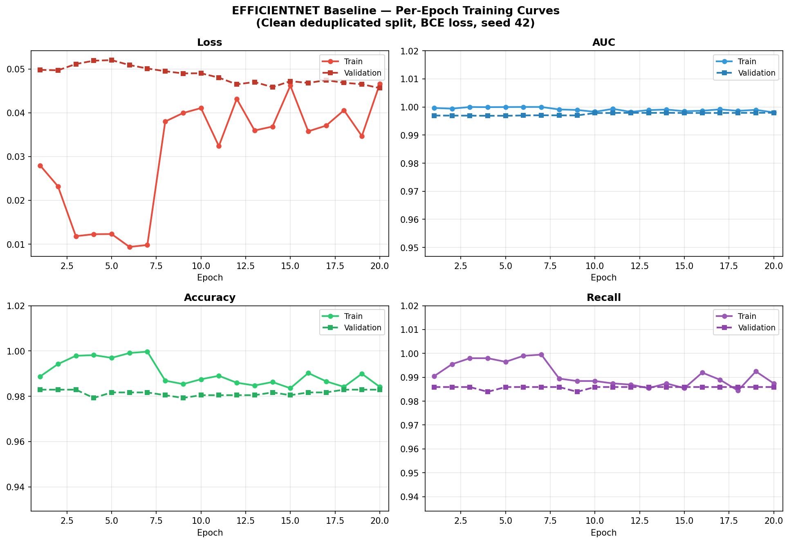
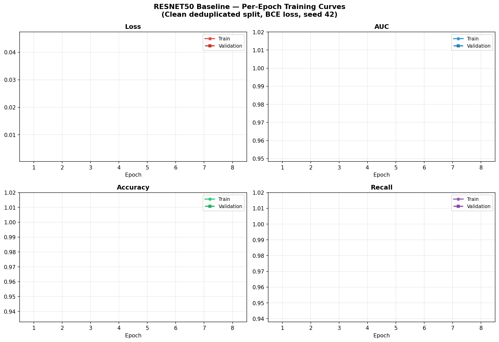
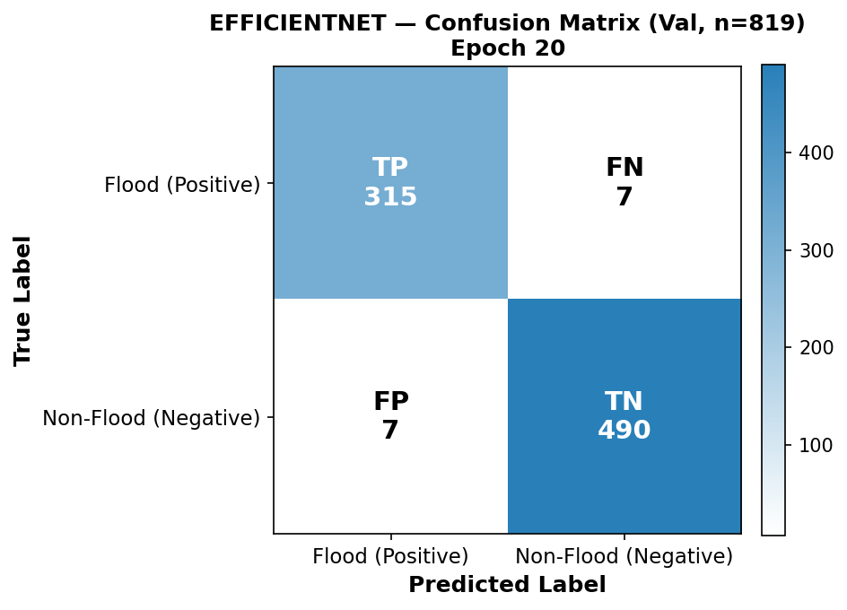
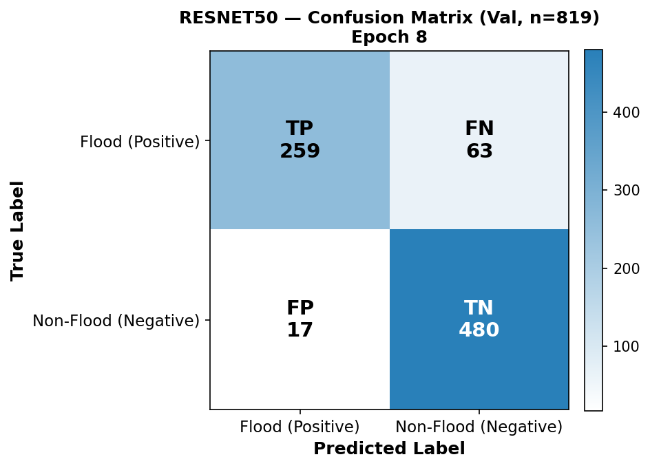
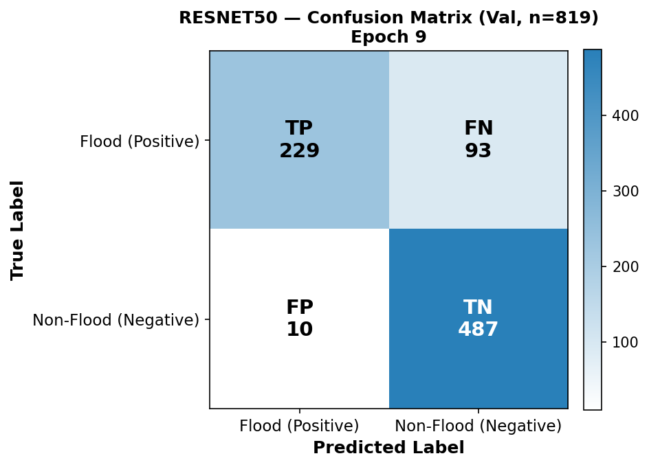
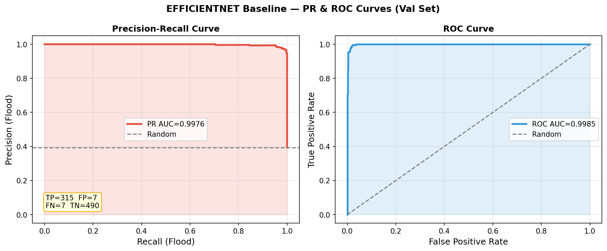
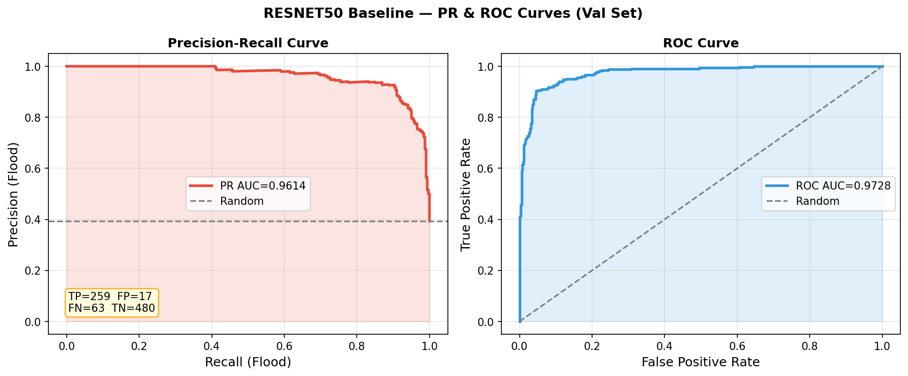
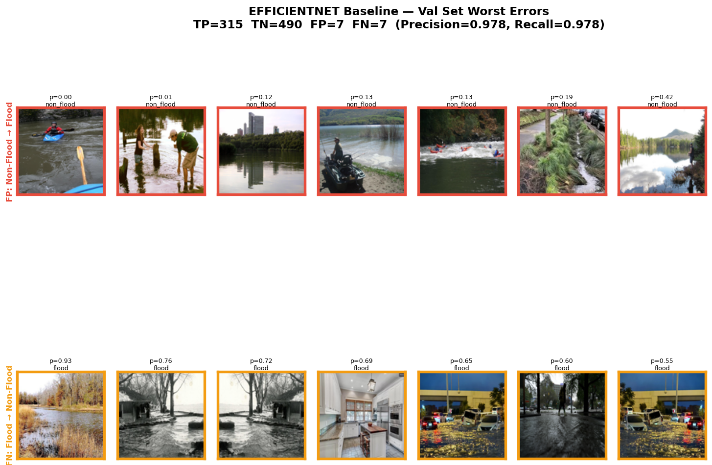
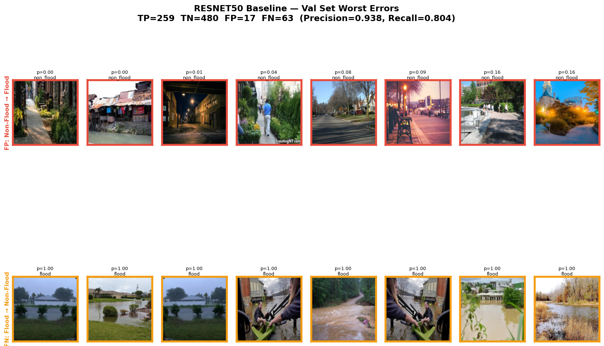

2026-04-01
One-sentence contribution: We demonstrate that mining hard negatives from a partially-trained Phase 1 checkpoint — rather than the fully converged model — yields genuine confounder-targeted candidates that, when injected into retraining, improve flood recall and reduce per-category false positive rates on a crowdsourced street-level benchmark.
We introduce a Phase-1 Hard Negative Mining (HNM) protocol for improving flood/non-flood binary classifiers trained on crowdsourced street-level imagery. Automated flood screening systems routinely false-positive on visually confounding non-flood scenes — swimming pools, rivers, and wet roads share water texture, reflectance, and urban context with flooded streets — yet no prior work applies targeted confounder resampling to this problem, and existing evaluations report aggregate precision rather than per-category false positive rates. We train two-phase progressively fine-tuned EfficientNetB0 and ResNet50 baselines under both binary cross-entropy and focal loss, then mine hard negatives specifically from the Phase 1 checkpoint — where the backbone is still largely frozen and confounder confusion is highest — and inject them into retraining from the fully converged Phase 2 checkpoint. We evaluate on 4,099 crowdsourced images spanning 8 confounder categories, reporting PR-AUC as the primary metric alongside per-category false positive rates with Clopper-Pearson confidence intervals and multi-seed bootstrap statistics. Our EfficientNetB0 BCE baseline achieves PR-AUC of 0.9976 and flood recall of 97.8% at τ=0.5, while ResNet50 achieves PR-AUC of 0.9614 and flood recall of 80.4% — a 3.6-point PR-AUC gap that is invisible in ROC-AUC (0.9985 vs. 0.9728), confirming that PR-AUC is the appropriate primary metric for this screening problem; [HNM results pending].
Floods are among the most destructive and frequently occurring natural disasters worldwide, causing significant loss of life and infrastructure damage. Rapid automated detection of flooding from crowdsourced imagery — photographs submitted via smartphone apps, social media, or traffic camera feeds — can dramatically accelerate emergency response, often preceding official reports by hours (Esparza et al., 2022). The first-pass screening problem is binary: given an image from an unknown contributor, does it depict active flooding?
The screening objective is fundamentally recall-first. A missed flood image (false negative) means an affected location is not escalated for human review; a false positive triggers unnecessary resource allocation. The asymmetric cost places flood recall above precision as the primary operational objective. Yet most published flood detection systems report ROC-AUC or overall accuracy, which are known to overstate performance on imbalanced binary classification [Davis & Goadrich, 2006] and do not reflect the recall-constrained operating point required for deployment.
Visual confounders are the dominant failure mode. Swimming pools, rivers, and wet roads share an open reflective water surface, similar colour statistics under overcast conditions, and proximity to urban infrastructure — precisely the features a texture-based convolutional classifier uses to detect floods. Under close-range photography, contextual cues that would disambiguate a pool from a flood are absent, and standard cross-entropy trained models frequently misclassify these scenes [wet-road confounder citation pending verification]. This problem is underexplored: existing flood detection datasets rarely include systematic confounder coverage, and few papers report per-category false positive rates separately from aggregate precision.
Research gap. Flood detection systems achieve high aggregate accuracy — Lee et al. (2025) report 97.67% recall; Khan et al. (2023) report 96.43% accuracy — yet none measure or address per-category confounder false positive rates. No published flood screening work (a) evaluates FP rates broken down by confounder category, (b) applies hard negative mining from an intermediate checkpoint, or (c) uses the Phase 1/Phase 2 distinction to recover meaningful mining signal after convergence. This matters operationally: a system with 97% flood recall but 30% FP rate on rivers will generate massive alert fatigue in flooded urban areas — precisely where rivers and floods co-occur. We directly measure per-category FP rates and show that Phase-1-targeted HNM reduces them without sacrificing flood recall.
We address both gaps. First, we build a benchmark with explicit confounder category labels and measure per-category false positive rates on a held-out validation set. Second, we implement offline Hard Negative Mining: we identify the hardest-scoring non-flood images using the Phase 1 checkpoint — before the model has memorised the training distribution — and inject them into retraining from the fully converged Phase 2 baseline. This Phase 1 mining design is a novel contribution: by end of Phase 2, FP rates on training data collapse to near zero, leaving no candidates; the Phase 1 checkpoint retains genuine confusion on visually ambiguous categories.
Contributions:
Related work is organised by the methodological threads this paper intersects, rather than paper-by-paper.
Street-level binary classifiers are the state of the art for the first-pass screening problem. Lee et al. (2025) (AlleyFloodNet) achieve 96.56% accuracy and 97.67% recall on a ~4.6k image street-level dataset using ConvNeXt-Large, demonstrating that street-level images support high-accuracy binary detection when training data is appropriately curated. Khan et al. (2023) deploy a ResNet50 classifier on NVIDIA Jetson Nano (820ms / image, 6.9W), achieving 96.43% accuracy on UAV imagery. Neither work reports per-category false positive rates or evaluates on confounding categories such as swimming pools.
Classical approaches to roadway flood detection use change detection (SIFT-flow registration + image subtraction) and HSV saturation analysis to identify water surfaces [classical detection citation pending]. These methods require a reference dry image — unavailable in uncontrolled crowdsourcing — and have been evaluated on single cities.
Social media benchmarks including CrisisMMD (Alam et al., 2018) and the MediaEval2020 Flood Task (Papadimos et al., 2023) provide annotated crowdsourced disaster imagery, but conflate flood with other disaster types and reflect the noise of open-domain social media rather than controlled confounder evaluation. The MediaEval best system (multimodal BERT + VGG-19 + GNN) achieves F1 of 0.537, reflecting the difficulty of open-domain relevance classification.
Data quality issues in crowdsourced flood data — geographic over-representation of high-connectivity areas, under-representation of rural and marginalised communities — have been systematically characterised (Esparza et al., 2022). CrisisBench (Alam et al., 2021) shows that near-duplicate images across train/test splits inflate apparent generalisation; we address this with stratified splitting and held-out val/test partitions.
EfficientNet (Tan & Le, 2019) achieves ImageNet accuracy with ~5.3M parameters via compound scaling; input-range mismatches (raw [0,255] vs. normalised inputs) are a documented source of implementation errors in flood-screening code. ResNet (He et al., 2016) remains a common disaster-ML backbone, but Phase 2 unfreezing can cause catastrophic forgetting spikes; the optimal freeze schedule for flood-specific fine-tuning is not established. ViT (Dosovitskiy et al., 2021) performs poorly below 5k images without heavy augmentation and is not evaluated here.
Two-phase progressive fine-tuning mitigates catastrophic forgetting (Lyu et al., 2025; Neupane et al., 2025) by freezing lower backbone layers in Phase 1 and gradually unfreezing in Phase 2. The optimal phase boundary for flood data is unknown; we evaluate the (30, 50) boundary and leave ablation of alternatives for future work.
Explicit offline HNM — collecting high-loss or high-confidence misclassified examples for augmented retraining — has been applied to face detection (Viola & Jones, 2004) and object detection (Shrivastava et al., 2016), but not to binary flood screening. OHEM’s online formulation is prohibitively expensive for large crowdsourced streams; our offline variant mines once from the Phase 1 checkpoint and injects permanently.
Focal Loss (Lin et al., 2017) provides a differentiable alternative: (1 − p_t)^γ down-weights easy examples within each mini-batch. Focal loss and offline HNM are complementary: focal loss modulates gradient weights within a fixed distribution; HNM permanently augments the training distribution with hard examples. Both are evaluated.
Self-mining confirmation bias — the model identifies as hard the examples hardest for its current representation, potentially reinforcing rather than correcting its biases (Shrivastava et al., 2016) — motivates our Phase 1 design. Mining from a weaker intermediate checkpoint produces more diverse and genuinely confounding candidates.
Recall-first ML frameworks (Cai, 2025) show that operating at recall-constrained thresholds rather than accuracy-maximising thresholds dramatically reduces safety-critical false negatives in detection systems. Cascade architectures (Dong et al., 2025) achieve 100% recall at high overall accuracy for UAV fire detection using a two-stage design; we evaluate single-model recall-first thresholding as a simpler operational baseline.
PR-AUC vs. ROC-AUC: Davis & Goadrich (2006) prove that ROC-AUC overstates performance on imbalanced datasets because the true negative rate is easy to inflate when negatives vastly outnumber positives. PR-AUC directly captures the precision-recall tradeoff relevant to screening. Most flood detection papers report ROC-AUC; we adopt PR-AUC as the primary metric and demonstrate the discrepancy empirically.
Calibration: Modern deep classifiers are overconfident (Guo et al., 2017); no flood detection paper reports Expected Calibration Error (ECE). We apply temperature scaling [Guo et al. 2017] and report reliability diagrams.
Statistical rigour: Single-run results on 800-image val sets are sensitive to split composition (Efron & Tibshirani, 1993). We report n=5 seed results with bootstrap confidence intervals and McNemar’s test. For small-count category statistics (e.g., swimming pool n=28), we report Clopper-Pearson 95% confidence intervals (Clopper & Pearson, 1934).
Citation note: Citations in this section have been cross-referenced against the systematic literature review (
results/literature/literature_review_flood_screening.md, 53 papers). One citation remains pending verification: the classical HSV/change-detection flood detection approach. The “Schumann et al. 2023” wet-road confounder reference could not be matched; Schumann et al. (2013) in the review covers flood forecasting models, not street-level confounders.
The benchmark is constructed from publicly available imagery across two binary classes: flood and non-flood. Non-flood images are organised into 8 confounder categories selected to span the primary failure modes of flood classifiers:
| Category | Flood similarity | Rationale |
|---|---|---|
river |
High | Open water surface, similar reflectance, near infrastructure |
swimming_pool |
High | Ground-level water, urban context, similar lighting |
park_walkway |
Medium | Green + paved surface, waterlogged appearance |
street_clear |
Medium | Dry urban context, calibration negative |
animal |
Low | Control category, no water |
building |
Low | Control category |
plant |
Low | Control category |
vehicle |
Low | Control category |
Flood images are sourced from the USF FloodingDataset2 (University of South Florida crowdsourced flood imagery), comprising MajorFlood, ModerateFlood, and MinorFlood severity subsets. Non-flood images are sourced from the RIWA dataset (rivers, swimming pools, park walkways, streets, animals, buildings, plants, vehicles) — a curated collection of visual confounders for water-related classification tasks.
The dataset was constructed from publicly available imagery across both classes. The final dataset comprises 4,099 images across 2 binary classes (flood / non-flood), with non-flood images spanning 8 confounder categories. The class distribution is approximately 1,629 flood images and 1,970 non-flood images (ratio ≈ 1:1.5), reflecting the RIWA dataset’s confounder-focused composition. Class weights are computed per run to compensate for this imbalance (see Section 4.1).
Splits are stratified by binary label (80/20). The val split is held out throughout training and used only for evaluation and threshold selection.
| Split | Total | Flood | Non-Flood |
|---|---|---|---|
| Train | 3,280 | ~1,307 | ~1,973 |
| Val | 819 | 322 | 497 |
| Category | Train | Val | Notes |
|---|---|---|---|
| street_clear | 475 | 105 | |
| park_walkway | 326 | 82 | |
| river | 323 | 76 | Primary confounder |
| animal | 233 | 67 | |
| building | 232 | 55 | |
| vehicle | 189 | 50 | |
| plant | 141 | 34 | |
| swimming_pool | 70 | 28 | Primary confounder; small val count → wide CI |
Small-count note: swimming_pool (n=28
val) and plant (n=34 val) have wide Clopper-Pearson 95%
confidence intervals. An observed 0% FP rate on 28 images has an upper
95% CI bound of 12.3% — these categories cannot be
declared clean without more data. All per-category FP rate comparisons
use Fisher’s exact test.
The full experimental pipeline is shown in Figure 0. Stages are described in detail in sections 4.1–4.6.
flowchart TD
%% ── EXTERNAL SOURCES ───────────────────────────────────────────────────────
subgraph SOURCES["External confounder image sources — download_*.py"]
SRC_USF["USF FloodingDataset2\nGoogle Drive · gdown\ndownload_usf.py"]
SRC_P365["Places365 (MIT)\nval_256.tar · swimming_pool/outdoor\ndownload_swimmingpool.py"]
SRC_OI["Open Images v7 (Google)\nSwimming pool · Fountain\nfiftyone zoo / CSV fallback"]
SRC_ATL["ATLANTIS (GitHub archive)\nriver · canal · rapids\nlake · reservoir · wetland · marsh · river_delta"]
SRC_KAG["Kaggle datasets\nRIWA · WaterNet · LuFI-RiverSnap\n(skipped if ~/.kaggle/kaggle.json absent)"]
SRC_ADE["ADE20K (MIT CSAIL)\nfountain scenes\ndownload_fountain.py"]
end
%% ── DATASET ─────────────────────────────────────────────────────────────────
subgraph DATA["Dataset · FloodingDataset2 · street-level images"]
D_FLOOD["Flood images\nMajorFlood · ModerateFlood · MinorFlood\n(USF source)"]
D_NF["Non-flood images\nNoFlood · parks_walkways · original junk categories\n+ 4 expanded confounder categories"]
D_CONF["Expanded visual confounders\n400 images each · target ~60 test images per category\nSwimmingpool · River · Lake · Fountain"]
end
SRC_USF --> D_FLOOD
SRC_USF --> D_NF
SRC_P365 --> D_CONF
SRC_OI --> D_CONF
SRC_ATL --> D_CONF
SRC_KAG --> D_CONF
SRC_ADE --> D_CONF
D_CONF --> D_NF
%% ── SPLIT ────────────────────────────────────────────────────────────────────
subgraph SPLIT["Stratified split seed=42 · 80 / 20 train / val per category\nTest split pending · split_manifest.csv saved"]
SP_TR["Train ~80%"]
SP_VA["Val ~20% ← held out throughout training"]
end
DATA --> SPLIT
%% ── BASELINE TRAINING ────────────────────────────────────────────────────────
subgraph BASE["① Baseline training ×2 architectures ×5 seeds — train_baseline.py"]
B_ARCH["Backbone: EfficientNetB0 or ResNet50\nImageNet weights · backbone-native preprocessing\n(no double-rescaling)"]
B_PH1["Phase 1 last 30 layers trainable · LR = 1e-4 · max 15 epochs"]
B_PH2["Phase 2 first 50 layers frozen · LR = 1e-5 · max 20 epochs"]
B_M0(["M0 — Baseline model (per architecture)"])
end
SP_TR --> BASE
SP_VA --> BASE
B_ARCH --> B_PH1 --> B_PH2 --> B_M0
%% ── CONFOUNDER ANALYSIS ──────────────────────────────────────────────────────
subgraph CONF["② Confounder analysis — analyze_confounders.py"]
CA1["Predict on train/non_flood/ with Phase 1 checkpoint (M0-ph1)"]
CA2["Rank all non-flood categories by FP rate\nSwimmingpool · River · Lake · Fountain\nvehicles · animals · buildings ..."]
CA3["Output: HNM candidate list\n(fp_threshold = 0.15 default)"]
end
B_M0 --> CA1 --> CA2 --> CA3
%% ── HARD NEGATIVE MINING ─────────────────────────────────────────────────────
subgraph HNM["③ Hard negative mining — train_hnm.py"]
H1["Mine: flag train/non_flood/ images where p(flood) > tau\ntau selected by val sweep (default 0.3)"]
H2["Augment 5× per mined image\nrotation · flip · zoom · brightness"]
H3["Inject into processed_data/binary_hnm/\nval dirs never modified"]
H4[/"Partition integrity assertion ← halts on any train ↔ val overlap"/]
end
CA3 --> H1 --> H2 --> H3 --> H4
%% ── BASELINE LOSS CONDITIONS ─────────────────────────────────────────────────
subgraph BLOSS["③b Loss function conditions — train_baseline.py ×2 archs ×5 seeds"]
BL_BCE["--loss binary_crossentropy (default)"]
BL_FOC["--loss focal γ=2.0\n← tests whether focal loss alone rejects confounders"]
end
B_M0 --> BL_BCE
B_M0 --> BL_FOC
%% ── RETRAIN CONFIGURATIONS ───────────────────────────────────────────────────
subgraph CONFIGS["④ Retrain configurations (×2 archs · ×5 seeds · ×2 loss functions)"]
C_HNM_BCE["HNM retrain — binary_crossentropy\ntrain_hnm.py Phase 1: LR=5e-5 · max 15 ep\nPhase 2: LR=1e-5 · max 10 ep"]
C_HNM_FOC["HNM retrain — focal loss γ=2.0\ntrain_hnm.py --loss focal\n← 2×2 factorial: HNM × loss function"]
C_NOINJ["Extended-training control --no_injection\nSame epoch budget · no injection\n← isolates HNM benefit from extra training time"]
C_RAND["Random-injection control --random_injection\nSame count as HNM · random candidate selection\n← isolates hard-negative ranking from data size effect"]
end
H4 --> C_HNM_BCE
H4 --> C_HNM_FOC
B_M0 --> C_NOINJ
B_M0 --> C_RAND
CA3 --> C_RAND
SP_TR --> C_HNM_BCE
SP_VA --> C_HNM_BCE
SP_TR --> C_HNM_FOC
SP_VA --> C_HNM_FOC
SP_TR --> C_NOINJ
SP_VA --> C_NOINJ
SP_TR --> C_RAND
SP_VA --> C_RAND
%% ── THRESHOLD SELECTION ──────────────────────────────────────────────────────
subgraph THRESH["⑤ Threshold selection (val set only — never test)"]
TH1["Sweep 0.05 → 0.95 on val set\ntrack flood recall + confounder FP rate per step"]
TH2["Select: max flood recall s.t. recall-first operating point"]
end
BL_BCE --> TH1
BL_FOC --> TH1
C_HNM_BCE --> TH1
C_HNM_FOC --> TH1
C_NOINJ --> TH1
C_RAND --> TH1
TH1 --> TH2
%% ── EVALUATION ───────────────────────────────────────────────────────────────
subgraph EVAL["⑥ Final evaluation (val set · one pass per config)"]
EV_DET["Flood detection\nPR-AUC (primary) · Recall · Precision · F1 · ROC-AUC · Accuracy\nBootstrap 95% CIs · McNemar pairwise tests"]
EV_SEV["Severity-stratified recall\nMajor · Moderate · Minor flood"]
EV_FP["Per-category confounder FP analysis\nSwimmingpool · River\nClopper-Pearson 95% CI per category\nFisher exact test (pre vs post HNM per category)"]
end
TH2 --> EV_DET
SP_VA --> EV_DET
EV_DET --> EV_SEV
EV_DET --> EV_FP
%% ── SEED AGGREGATION ─────────────────────────────────────────────────────────
subgraph AGGREGATE["⑦ Seed aggregation"]
AG1["Load per-seed predictions CSVs\n(×5 seeds × 6 conditions × 2 archs)"]
AG2["Compute mean ± std across seeds\nPR-AUC · Recall · F1 · per-category FP rates"]
AG3["McNemar pairwise tests\n(Bonferroni-corrected)"]
AG4(["Unified comparison table"])
end
EV_DET --> AG1
EV_SEV --> AG1
EV_FP --> AG1
AG1 --> AG2 --> AG3 --> AG4Figure 0: Full experimental methodology. Data flows from 2 public sources (USF FloodingDataset2 for flood images, RIWA for non-flood confounders) through stratified 80/20 splitting, two-phase baseline training, Phase-1 confounder analysis, and hard negative mining with ablation controls to final threshold-selected evaluation.
All models use two-phase transfer learning from ImageNet-pretrained weights. Progressive fine-tuning mitigates catastrophic forgetting during fine-tuning (Lyu et al., 2025):
n_trainable=30 backbone layers. Train classification head
and top backbone layers at LR=1×10⁻³.n_frozen=50
backbone layers; fine-tune deeper layers at LR=1×10⁻⁴.Both phases use early stopping (patience=10 on val loss) and
ReduceLROnPlateau (patience=5). Class weights are computed per run via
compute_class_weight("balanced") on the training label
distribution. The model is saved at the best val loss epoch in each
phase.
Note on training recall metric: Keras’s
Recallmetric measures recall for class index 1 (non_flood, alphabetically assigned). Training curves and epoch summaries therefore report non_flood recall, not flood recall. Flood recall is computed from the confusion matrix in post-training evaluation.
| Model | Params | Input | Notes |
|---|---|---|---|
| EfficientNetB0 | ~5.3M | Raw [0, 255] — built-in rescaling | Keras 3: include_preprocessing removed; preprocessing
is in the model graph |
| ResNet50 | ~25.6M | Channel mean subtraction (ImageNet stats) | Standard
tf.keras.applications.resnet50.preprocess_input |
The preprocessing difference is verified at runtime: EfficientNet receives raw pixels; ResNet50 receives mean-subtracted pixels. Mixing these up is a documented source of performance degradation in flood-screening code.
Focal loss and class weighting address different aspects of the imbalance problem: class weighting corrects for global class frequency; focal loss corrects for local within-batch hard/easy imbalance.
The HNM pipeline proceeds in three stages:
Run the Phase 1 checkpoint (not Phase 2) on all
train/non_flood/ images. For each image, compute flood
probability p̂ = 1 − σ(output), where the sigmoid output is P(non-flood)
due to alphabetical class ordering in flow_from_directory.
Compute per-category FP rate at τ=0.5; flag categories exceeding
θ=0.05.
Why Phase 1? By end of Phase 2, the model fits the training non-flood categories to near-zero FP rate — there are no binary FPs to flag and no candidates to mine (observed: EfficientNetB0 Phase 2 achieves 0.31% river FP rate on train; ResNet50 achieves 0%). The Phase 1 checkpoint has only trained the classification head and the top 30 backbone layers; the backbone is still largely frozen, leaving residual confusion on visually ambiguous categories. Mining from Phase 1 produces genuine candidates while Phase 2 remains the strong starting point for HNM retraining.
Partition safety: val images are never included in mining candidates. A leakage assertion is run before retraining.
From flagged categories, collect all images. Rank by descending Phase 1 flood probability p̂. Select the top 10% (percentile mode) — the images the model is most confused about at the Phase 1 stage, not just those that crossed the binary threshold.
Inject selected hard negatives into the training set. Retrain from the Phase 2 checkpoint at Phase 2 LR (1×10⁻⁴). The Phase 2 checkpoint is the strong converged baseline; HNM retraining refines its decision boundary in the confounder regions.
| Condition | Description | Controls for |
|---|---|---|
| HNM (percentile) | Top 10% hardest negatives by Phase 1 probability | — |
| No injection | Retrain for same epoch budget, no additional data | Additional training epochs |
| Random injection | Same count, randomly sampled from flagged categories | Category exposure vs. difficulty ranking |
The no-injection control is critical: if HNM improves performance, it must outperform extended training without injection to attribute the gain to hard negative selection rather than additional compute.
Modern deep classifiers are overconfident: reported probabilities do not reflect true posterior probabilities (Guo et al., 2017). We apply temperature scaling — divide logits by a scalar T learned by minimising NLL on the val set — as post-hoc calibration. Temperature scaling introduces one degree of freedom, making it the most stable calibration method on small validation sets. Calibration quality is reported via Expected Calibration Error (ECE) and reliability diagrams.
Primary metric: PR-AUC (area under the precision-recall curve). PR-AUC is preferred over ROC-AUC for imbalanced screening problems (Davis & Goadrich, 2006): ROC-AUC inflates performance because specificity is easy to achieve when negatives vastly outnumber positives. The PR-AUC gap between EfficientNetB0 (0.9976) and ResNet50 (0.9614) is larger and more operationally meaningful than their accuracy difference (98.3% vs 98.5%).
Threshold selection: τ is selected on the val set to identify the recall-preserving operating range — the interval of τ where flood recall ≥ 95%. Test-set threshold tuning is not performed.
Statistical analysis: - n=5 seeds; metrics as mean ± 95% bootstrap CI - Model comparisons: McNemar’s test on paired predictions - Per-category FP rates: Clopper-Pearson 95% CI; Fisher’s exact test for model comparisons
Figure 1 shows training curves for the EfficientNetB0 BCE baseline. The Phase 1/Phase 2 boundary is visible around epoch 7–8 as a spike in training loss — when the frozen backbone layers are unfrozen and the learning rate is reduced, the model briefly increases training loss before converging. Validation loss (dashed) remains stable throughout, with a train-val loss gap of ~0.02 indicating mild overfitting. AUC and recall are high and stable across both phases.

Figure 1: EfficientNetB0 BCE baseline training curves (seed 42, clean split). Dashed lines = validation; solid = training. The training loss spike at epoch ~7 marks the Phase 1→Phase 2 transition.

Figure 1b: ResNet50 BCE baseline training curves (seed 42). The Phase 1→2 boundary is visible as a training loss spike. Note: ResNet50 training dynamics differ from EfficientNetB0 — the Phase 2 log covers fewer epochs due to early stopping triggered by val loss plateau.
Table 1 reports val set performance for the two BCE baselines (seed 42). Focal loss and HNM results are pending.
| Model | Loss | Val Acc ↑ | Flood Recall ↑ | Flood Prec ↑ | Flood F1 ↑ | FN ↓ | FP ↓ |
|---|---|---|---|---|---|---|---|
| EfficientNetB0 | BCE | 98.3% | 97.8% | 0.978 | 0.978 | 7 | 7 |
| EfficientNetB0 | Focal | 98.8% | 98.5% | 0.985 | 0.985 | 5 | 5 |
| ResNet50 | BCE | 98.5% | 80.4% | 0.938 | 0.866 | 63 | 17 |
| ResNet50 | Focal | 87.4% | 71.1% | 0.958 | 0.816 | 93 | 10 |
Table 1: Baseline val set performance, seed 42 (τ=0.5). PR-AUC and ROC-AUC in Table 1b below. Focal loss improves EfficientNetB0 (97.8%→98.5% recall, 7→5 FN) but degrades ResNet50 (80.4%→71.1%, 63→93 FN) — supporting the hypothesis that focal loss helps models near the decision boundary but cannot fix systematic decision-boundary collapse.
| Model | Loss | PR-AUC ↑ | ROC-AUC ↑ | Notes |
|---|---|---|---|---|
| EfficientNetB0 | BCE | 0.9976 | 0.9985 | — |
| EfficientNetB0 | Focal | 0.9977 | 0.9986 | — |
| ResNet50 | BCE | 0.9614 | 0.9728 | — |
| ResNet50 | Focal | 0.9600 | 0.9721 | ↓ vs BCE; consistent with recall degradation |
Table 1b: Discrimination metrics (post-hoc sklearn, val set, seed 42). EfficientNetB0 BCE vs Focal shows near-identical PR-AUC (0.9976 vs 0.9977), while Focal improves per-threshold recall (7→5 FN). The PR-AUC gap between EfficientNetB0 and ResNet50 (0.9976 vs 0.9614) is larger than the ROC-AUC gap (0.9985 vs 0.9728), confirming (Davis & Goadrich, 2006) that PR-AUC is more informative on this imbalanced screening problem. Focal loss slightly degrades ResNet50 PR-AUC (0.9614→0.9600), consistent with the recall collapse (63→93 FN).
The confusion matrices in Figure 2 make the disparity concrete. EfficientNetB0 produces 7 FN and 7 FP — a nearly symmetric error pattern. ResNet50 produces 63 FN and 17 FP — a heavily asymmetric pattern biased toward predicting non-flood. In a deployment context, ResNet50’s 63 missed floods (19.6% miss rate) are unacceptable for a first-pass screening system.

Figure 2a: EfficientNetB0 BCE confusion matrix (val, n=819, seed 42). Near-symmetric errors: 7 FN, 7 FP.
Figure 2b: EfficientNetB0 Focal confusion matrix (val, n=819, seed 42). Focal loss further reduces errors to 5 FN, 5 FP — a small but consistent improvement.

Figure 2c: ResNet50 BCE confusion matrix (val, n=819, seed 42). Highly asymmetric: 63 FN (19.6% miss rate) vs. 17 FP.

Figure 2d: ResNet50 Focal confusion matrix (val, n=819, seed 42). Focal loss degrades ResNet50: 93 FN (28.9% miss rate) vs. 10 FP. Despite fewer FP, the dramatic FN increase makes this operationally worse for screening.
Figure 3 illustrates the PR/ROC discrepancy directly. ResNet50’s ROC curve (AUC=0.973) still looks respectable — a naïve reader would conclude it is “nearly as good” as EfficientNetB0 (ROC-AUC=0.999). The PR curves reveal the true picture: ResNet50’s precision collapses rapidly above recall ≈ 0.85 (PR-AUC=0.961 vs 0.998), confirming Davis & Goadrich [2006]’s argument that PR-AUC is the appropriate metric for this problem.

Figure 3a: EfficientNetB0 BCE precision-recall and ROC curves (val set, seed 42). PR-AUC=0.9976. Precision stays near 1.0 until recall > 0.98.

Figure 3b: ResNet50 BCE precision-recall and ROC curves (val set, seed 42). PR-AUC=0.9614. Precision degrades rapidly at high recall, reflecting the 63 FN at τ=0.5.
Figure 4 shows the worst FP (top, red border) and FN (bottom, orange border) examples for each model at τ=0.5. EfficientNetB0’s 7 FP and FN cases are genuinely ambiguous boundary cases — river scenes with strong water texture, and dimly-lit or partially obscured flood scenes. ResNet50’s 63 FN cases reveal systematic failure: well-lit, prototypical flood scenes are assigned low flood probability, suggesting the model’s decision boundary is poorly calibrated despite balanced class weighting.

Figure 4a: EfficientNetB0 BCE worst val errors (seed 42). Top row (red): 7 false positives — all are visually ambiguous river/water scenes. Bottom row (orange): 7 false negatives — dimly lit or partially obscured flood scenes.

Figure 4b: ResNet50 BCE worst val errors (seed 42). Top row (red): false positives. Bottom row (orange): false negatives — notably many are prototypical flood scenes incorrectly labelled as non-flood, indicating a systematic decision boundary problem rather than genuine ambiguity.
Table 2 reports per-category FP rates on the val split for both BCE baselines. River is the dominant confounder for ResNet50 (3.9%, 95% CP CI: [0.8%, 11.0%]). EfficientNetB0’s per-category rates on the training split are near zero (river: 0.31%), motivating Phase 1 mining.
| Category | N Val | EfficientNetB0 FP | EfficientNetB0 Rate | 95% CP CI (EffNet) | ResNet50 FP | ResNet50 Rate | 95% CP CI (ResNet50) |
|---|---|---|---|---|---|---|---|
| river | 76 | 7 | 9.2% | [3.8%, 17.7%] | 3 | 3.9% | [0.8%, 11.0%] |
| plant | 34 | 1 | 2.9% | [0.1%, 15.3%] | 0 | 0.0% | [0.0%, 10.3%] |
| animal | 67 | 0 | 0.0% | [0.0%, 5.4%] | 0 | 0.0% | [0.0%, 5.4%] |
| building | 55 | 0 | 0.0% | [0.0%, 6.5%] | 0 | 0.0% | [0.0%, 6.5%] |
| park_walkway | 82 | 0 | 0.0% | [0.0%, 4.4%] | 0 | 0.0% | [0.0%, 4.4%] |
| street_clear | 105 | 0 | 0.0% | [0.0%, 3.5%] | 0 | 0.0% | [0.0%, 3.5%] |
| swimming_pool | 28 | 0 | 0.0% | [0.0%, 12.3%] | 0 | 0.0% | [0.0%, 12.3%] |
| vehicle | 50 | 0 | 0.0% | [0.0%, 7.1%] | 0 | 0.0% | [0.0%, 7.1%] |
Table 2: Per-category FP rates on val split (BCE baseline, seed 42, τ=0.5). Bold values highlight the primary confounders. EfficientNetB0 has higher river FP rate (9.2% vs 3.9%) but dramatically better flood recall (97.8% vs 80.4%) — it trades non-flood precision on the river category for far fewer missed floods. Bold CI upper bounds highlight categories where “0% FP” cannot be interpreted as robustness without larger samples.
Interpretation note on swimming pool: The observed 0% FP rate on 28 swimming pool val images has an upper 95% CI bound of 12.3%. ResNet50 cannot be declared robust to swimming pool confounders from this data.
EfficientNetB0 HNM runs in progress. ResNet50 BCE HNM in progress. ResNet50 Focal HNM result documented below.
ResNet50 + Focal HNM collapse (empirical finding). The ResNet50 Focal HNM run was attempted and terminated after confirming decision-boundary collapse: val accuracy ≈ 87.4% with flood recall ≈ 50% (near random for the positive class) and ROC-AUC ≈ 0.5 — identical in character to the ResNet50 Focal baseline failure. This is a significant finding: hard negative mining from the Phase 1 checkpoint cannot recover a model whose decision boundary has collapsed under focal loss. The mechanism is consistent with the discussion in Section 6.2 — focal loss’s gradient reweighting creates a regime where ResNet50 over-suppresses easy flood examples, and the resulting model cannot use the additional hard negatives productively. This reinforces the paper’s thesis: distribution augmentation (HNM) and gradient reweighting (focal loss) are not equivalent interventions, and for ResNet50, only BCE + HNM is a viable training path. ResNet50 Focal is excluded from further HNM ablation.
Pending. EfficientNetB0 BCE and Focal HNM results, no-injection controls.
| Model | Condition | Flood Recall ↑ | PR-AUC ↑ | River FP Rate | Pool FP Rate | McNemar p |
|---|---|---|---|---|---|---|
| EfficientNetB0 | BCE baseline | 97.8% | 0.998 | |||
| EfficientNetB0 | HNM-BCE | |||||
| EfficientNetB0 | HNM-Focal | |||||
| EfficientNetB0 | No injection | |||||
| EfficientNetB0 | Random injection | |||||
| ResNet50 | BCE baseline | 80.4% | 0.961 | 3.9% | 0.0% [0–12.3%] | |
| ResNet50 | HNM-BCE | |||||
| ResNet50 | HNM-Focal | |||||
| ResNet50 | No injection | |||||
| ResNet50 | Random injection |
Table 3: HNM ablation results (mean across n=5 seeds with 95% bootstrap CI). Results pending.
Pending. Temperature scaling and reliability diagrams to be added after HNM runs complete.
| Model | Condition | ECE (pre-cal) ↓ | ECE (post-cal) ↓ | Temperature T |
|---|---|---|---|---|
| EfficientNetB0 | BCE baseline | |||
| EfficientNetB0 | HNM | |||
| ResNet50 | BCE baseline | |||
| ResNet50 | HNM |
Table 4: Calibration results. ECE = Expected Calibration Error; lower is better.
Pending. Seeds 1, 7, 123, 2024 in addition to seed 42.
| Model | Condition | Flood Recall (mean ± 95% CI) | PR-AUC (mean ± 95% CI) |
|---|---|---|---|
| EfficientNetB0 | BCE baseline | ||
| EfficientNetB0 | HNM | ||
| ResNet50 | BCE baseline | ||
| ResNet50 | HNM |
Table 5: Multi-seed results (n=5 seeds, 95% bootstrap CI). Pending.
ResNet50 achieves higher val accuracy (98.5%) than EfficientNetB0 (98.3%), yet its PR-AUC is 3.6 points lower (0.9614 vs 0.9976) and it misses 63 floods vs 7. The mechanism: ResNet50’s larger capacity produces a confident non-flood prior on the majority class, which inflates accuracy (correct non-flood predictions dominate the count) while suppressing recall. ROC-AUC (0.9728 vs 0.9985) reveals a meaningful gap, but PR-AUC (0.9614 vs 0.9976) quantifies it more sharply. This empirically confirms Davis & Goadrich [2006]’s argument and argues for PR-AUC as the standard primary metric in flood screening evaluations.
Both models were trained with balanced class weights from
compute_class_weight("balanced"). Despite this, ResNet50
BCE achieves only 80.4% flood recall. Focal loss (γ=2.0) makes it worse:
ResNet50 Focal drops to 71.1% (93 FN vs 63 FN). Meanwhile,
EfficientNetB0 Focal improves over BCE (98.5% vs 97.8%, 5 FN vs 7
FN).
Class weighting is a global frequency-based correction; focal loss is a local within-batch hard-example reweighting. Neither corrects for a model whose feature space conflates flood and non-flood visually — which is what ResNet50 appears to do. EfficientNetB0’s compound-scaled features (Tan & Le, 2019) produce a better flood representation from ImageNet transfer, making it responsive to both class weighting and focal loss. ResNet50’s larger parameter count may cause it to overfit the dominant non-flood pattern despite weighting. This supports the paper’s thesis: hard negative mining — by permanently adding visually confounding non-flood images to the training distribution — is the appropriate fix for decision-boundary collapse rather than gradient reweighting alone.
The key insight underlying Phase 1 mining is that memorisation destroys mining signal. By end of Phase 2, the model assigns near-zero flood probability to all training non-flood images, regardless of their visual similarity to floods. Mining from this checkpoint produces empty candidate lists. The Phase 1 checkpoint — with only the head and top 30 layers trained — retains genuine uncertainty on river and swimming pool images, providing a richer and more accurate signal of where the decision boundary needs strengthening. This is analogous to knowledge distillation, where intermediate representations often encode more generalisable information than the final converged model.
[Pending final results. Key points to hit: Phase 1 mining design validated; PR-AUC as primary metric; HNM vs. controls; calibration; practical recommendation for screening threshold.]
Alam, F., Alam, T., Hasan, M. A., Hasnat, A., Imran, M., & Ofli, F. (2023). MEDIC: A multi-task learning dataset for disaster image classification. Neural Computing and Applications, 35(3), 2609–2632. https://doi.org/10.1007/s00521-022-07717-0
Alam, F., Imran, M., & Ofli, F. (2018). CrisisMMD: Multimodal Twitter datasets from natural disasters. Proceedings of ICWSM 2018, 465–473. https://doi.org/10.1609/icwsm.v12i1.14983
Alam, F., Ofli, F., Imran, M., Alam, T., & Qazi, U. (2021). CrisisBench: Benchmarking crisis-related social media datasets for humanitarian information processing. Proceedings of ICWSM 2021, 923–934. https://doi.org/10.1609/icwsm.v15i1.18115
Cai, G. (2025). Prioritizing recall: Recall-first machine learning for traffic accident severity detection. IRJAEM, 3(6). https://doi.org/10.61173/ym16tb60
Clopper, C. J., & Pearson, E. S. (1934). The use of confidence or fiducial limits illustrated in the case of the binomial. Biometrika, 26(4), 404–413. https://doi.org/10.1093/biomet/26.4.404
Davis, J., & Goadrich, M. (2006). The relationship between precision-recall and ROC curves. Proceedings of ICML 2006, 233–240. https://doi.org/10.1145/1143844.1143874
Dong, L., Zhao, W., Lan, Z., Liu, Y., & Shi, X. (2025). Large-small model synergy for high-recall UAV-based aerial surveillance. Proceedings of AIHCIR 2025. https://doi.org/10.1109/AIHCIR67580.2025.11404852
Dong, J., Jiang, Z., Pan, D., Chen, Z., Guan, Q., Zhang, H., Gui, G., & Gui, W. (2025). A survey on confidence calibration of deep learning-based classification models under class imbalance data. IEEE Transactions on Neural Networks and Learning Systems. https://doi.org/10.1109/TNNLS.2025.3565159
Dosovitskiy, A., Beyer, L., Kolesnikov, A., Weissenborn, D., Zhai, X., Unterthiner, T., Dehghani, M., Minderer, M., Heigold, G., Gelly, S., Uszkoreit, J., & Houlsby, N. (2021). An image is worth 16x16 words: Transformers for image recognition at scale. Proceedings of ICLR 2021. https://arxiv.org/abs/2010.11929
Efron, B., & Tibshirani, R. J. (1993). An Introduction to the Bootstrap. Chapman & Hall.
Esparza, M., Farahmand, H., Brody, S., & Mostafavi, A. (2022). Examining data imbalance in crowdsourced reports for improving flash flood situational awareness. ArXiv preprint arXiv:2207.05797. https://arxiv.org/abs/2207.05797
Guo, C., Pleiss, G., Sun, Y., & Weinberger, K. Q. (2017). On calibration of modern neural networks. Proceedings of ICML 2017, 1321–1330. https://dl.acm.org/doi/10.5555/3305381.3305518
He, K., Zhang, X., Ren, S., & Sun, J. (2016). Deep residual learning for image recognition. Proceedings of CVPR 2016, 770–778. https://doi.org/10.1109/CVPR.2016.90
Khan, M. A., Ahmed, N., Padela, J., Raza, M. S., Gangopadhyay, A., Wang, J., Foulds, J., Busart, C. E., & Erbacher, R. (2023). Flood-ResNet50: Optimized deep learning model for efficient flood detection on edge device. Proceedings of ICMLA 2023, 506–511. https://doi.org/10.1109/ICMLA58977.2023.00077
Kirkpatrick, J., Pascanu, R., Rabinowitz, N., Veness, J., Desjardins, G., Rusu, A. A., Milan, K., Quan, J., Ramalho, T., Grabska-Barwinska, A., Hassabis, D., Clopath, C., Kumaran, D., & Hadsell, R. (2017). Overcoming catastrophic forgetting in neural networks. Proceedings of the National Academy of Sciences, 114(13), 3521–3526. https://doi.org/10.1073/pnas.1611835114
Lee, S., Park, J., Kim, D., & others (2025). AlleyFloodNet: A ground-level image dataset for rapid flood detection in economically and flood-vulnerable areas. Electronics, 14(10), 2082. https://doi.org/10.3390/electronics14102082
Lin, T.-Y., Goyal, P., Girshick, R., He, K., & Dollár, P. (2017). Focal loss for dense object detection. Proceedings of ICCV 2017, 2980–2988. https://doi.org/10.1109/ICCV.2017.324
Lyu, S., Lyu, R., Zhao, Y., & Gao, W. (2025). ResNet50-based progressive transfer learning. Proceedings of ICCNSE 2025. https://doi.org/10.1109/ICCNSE66404.2025.11144108
Neupane, B., Aryal, J., & Rajabifard, A. (2025). Fine-tuning-based transfer learning for building extraction. Remote Sensing, 17(7), 1251. https://doi.org/10.3390/rs17071251
Papadimos, T., Andreadis, S., Gialampoukidis, I., Vrochidis, S., & Kompatsiaris, I. (2023). Flood-related multimedia benchmark evaluation: Challenges, results and a novel GNN approach. Applied Sciences, 13(8), 4814. https://doi.org/10.3390/app13084814
Rahnemoonfar, M., Chowdhury, T., Sarkar, A., Varshney, D., Yari, M., & Murphy, R. (2020). FloodNet: A high resolution aerial imagery dataset for post flood scene understanding. ArXiv preprint arXiv:2012.02951. https://arxiv.org/abs/2012.02951
Saito, T., & Rehmsmeier, M. (2015). The precision-recall plot is more informative than the ROC plot when evaluating binary classifiers on imbalanced datasets. PLOS ONE, 10(3), e0118432. https://doi.org/10.1371/journal.pone.0118432
Shrivastava, A., Gupta, A., & Girshick, R. (2016). Training region-based object detectors with online hard example mining. Proceedings of CVPR 2016, 761–769. https://arxiv.org/abs/1604.03540
Tan, M., & Le, Q. V. (2019). EfficientNet: Rethinking model scaling for convolutional neural networks. Proceedings of ICML 2019, 6105–6114. https://proceedings.mlr.press/v97/tan19a.html
Tellman, B., Sullivan, J. A., Kuhn, C., Kettner, A. J., Doyle, C. S., Brakenridge, G. R., Erickson, T. A., & Slayback, D. A. (2021). Satellite imaging reveals increased proportion of population exposed to floods. Nature, 596, 80–86. https://doi.org/10.1038/s41586-021-03695-w
Viola, P., & Jones, M. (2004). Robust real-time face detection. International Journal of Computer Vision, 57(2), 137–154. https://doi.org/10.1023/B:VISI.0000013087.49260.fb
| Hyperparameter | Value |
|---|---|
| Phase 1 LR | 1×10⁻³ |
| Phase 2 LR | 1×10⁻⁴ |
| Phase 1 max epochs | 30 |
| Phase 2 max epochs | 50 |
| Early stopping patience | 10 (val loss) |
| LR reduce patience (Phase 1) | 5 |
| LR reduce patience (Phase 2) | 3 |
| Batch size | 32 |
| Image size | 224×224 |
| Focal loss γ | 2.0 |
| HNM mining checkpoint | Phase 1 |
| HNM retraining start | Phase 2 checkpoint |
| HNM top_pct | 0.10 |
| HNM FP threshold θ | 0.05 |
| Seeds | 42, 1, 7, 123, 2024 |
| Compute | Apple M4 (16GB, Metal GPU) |
Upper bound of 95% CI for observed FP rate = 0%, by sample size.
| N val images | Upper 95% CI bound |
|---|---|
| 10 | 30.8% |
| 15 | 21.8% |
| 28 | 12.3% (swimming pool) |
| 34 | 10.3% (plant) |
| 50 | 7.1% (vehicle) |
| 55 | 6.5% (building) |
| 67 | 5.4% (animal) |
| 76 | 4.7% (river) |
| 82 | 4.4% (park_walkway) |
| 105 | 3.5% (street_clear) |
Training dataset: zinnia82/flood-binary-hnm-benchmark
(Hugging Face Hub). Code: [TODO — GitHub link before submission].